승강기산업기사 (2017-05-07 기출문제)
1과목: 승강기개론
1. 승강기의 최대 정원은 1인당 하중을 kg으로 계산한 값인가?(관련 규정 개정전 문제로 여기서는 기존 정답인 3번을 누르면 정답 처리됩니다. 자세한 내용은 해설을 참고하세요.)
- 55
- 60
- 65
- 70
(정답률: 90%)

2. 카 바닥의 구성요소로 틀린 것은?
- 에이프런
- 안전난간대
- 하중검출장치
- 플로어베이스
(정답률: 91%)
3. 승강장 도어가 레일 끝을 이탈(overrun)하는 것을 방지하기 위해 설치하는 것은?
- 스톱퍼
- 로킹장치
- 행거레일
- 행거롤러
(정답률: 86%)
4. 전기식엘리베이터의 로프구동방식에서 트랙션 능력에 영향을 미치는 인자가 아닌 것은?
- 권부각
- 로프본수
- 장자연대수의 밑수
- 도르래의 홈과 와이어로프간의 마찰계수
(정답률: 66%)
5. 에스컬레이터의 안전장치가 아닌 것은?
- 피트정지 스위치
- 구동체인 안전장치
- 스텝체인 안전장치
- 스커트가드 안전장치
(정답률: 90%)
6. 균형추 비상정지장치에 대한 조속기의 작동속도는 카 비상정지장치에 대한 작동속도보다 더 높아야하나 그 속도는 몇 %를 넘게 초과하지 않아야 하는가?
- 10
- 15
- 20
- 25
(정답률: 58%)
7. 승객용 엘리베이터의 주로프로 사용되는 현수로프의 안전율은 얼마 이상이어야 하는가?
- 6
- 8
- 10
- 12
(정답률: 79%)
8. 엘리베이터용 가이드 레일의 역할이 아닌 것은?
- 카나 균형추의 승강로내 위치를 규제한다.
- 비상정지장치 작동 시 수직하중을 유지해준다.
- 카의 자중에 의한 카의 기울어짐을 방지해준다.
- 승강로의 기계적 강도를 보강해 주는 역할을 한다.
(정답률: 84%)
9. 교류 2단 속도제어 시 승강기(AC-2Elevator)의 저속과 고속측의 속도비는?
- 2:1
- 3:1
- 4:1
- 6:1
(정답률: 77%)
10. 엘리베이터를 기계실 위치에 따라 분류한 것이 아닌 것은?
- 하부형 엘리베이터
- 측부형 엘리베이터
- 경사형 엘리베이터
- 정상부형 엘리베이터
(정답률: 92%)
11. 엘리베이터용 전동기의 출력용량 산정과 관계없는 것은?
- 회전수
- 종합효율
- 정격속도
- 정격하중
(정답률: 74%)
12. 비선형 특성을 갖는 에너지 축적형 완충기에 대한 사항으로 틀린 것은?
- 카의복귀속도는 1m/s 이하이어야 한다.
- 작동 후에는 영구적인 변형이 없어야 한다.
- 2.5gn를 초과하는 감속도는 0.⑤초 보다 길지 않아야 한다.
- 카에 정격하중을 싣고 정격속도의 115%의 속도로 자유 낙하하여 카 완충기에 충돌할 때의 평균 감속도는 1gn 이하이어야 한다.
(정답률: 79%)
13. 압력 릴리프 밸브는 압력을 전 부하 압력의 몇%까지 제한하도록 맞추어 조절되어야 하는가?
- 110
- 125
- 130
- 140
(정답률: 85%)
14. 에스컬레이터 제동기(브레이크) 시스템의 설명으로 틀린 것은?
- 브레이크 시스템의 적용에서 의도적인 지연은 없어야 한다.
- 에스컬레이터의 출발 후에는 브레이크 시스템의 개방을 감시하는 장치가 설치되어야 한다.
- 정지거리가 최대값의 25%를 초과하면, 고장 안전장치의 재설정후에만 재기동이 가능하여야 한다.
- 에스컬레이터는 균일한 감속 및 정지상태(제동 운전)를 지속할 수 있는 브레이크 시스템이 있어야 한다.
(정답률: 68%)
15. 유압식엘리베이터에서 파워유니트는 무엇인가?
- 승강로에 설치한 카와 직렬 연결된 이동기둥이다.
- 대용량 유압식엘리베이터에 사용하는 안전장치이다.
- 펌프 및 탱크, 밸브류를 한데 묶은 것으로 기계실에 설치한다.
- 실린더를 넣고 빼는 자치로서 카의 중앙하부피트 내에 묻는다.
(정답률: 77%)
16. 카 비상정지장치가 작동될 때, 부하가 없거나 부하가 균일하게 분포된 카의 바닥은 정상적인 위치에서 몇 %를 초과하여 기울어지지 않아야 하는가?
- 3
- 5
- 7
- 10
(정답률: 90%)
17. 승강로의 카 출입구에 대한 설명으로 옳은 것은?
- 침대용은 2개의 출입구 문이 동시에 열려도 된다.
- 화물용은 하나의 층에 하나의 출입구만을 설치하여야 한다.
- 승객용은 하나의 층에 2개의 출입구를 설치하고, 2개의 문은 동시에 열리는 구조이어야 한다.
- 자동차용은 하나의 층에 2개의 출입구를 설치할 수 있으나 2개의 문이 동시에 열려 통로로 사용되어서는 아니 된다.
(정답률: 85%)
18. 승강로에는 모든 문이 닫혀있을 때 카 지분 및 피트 바닥 위로 1m 위치에서 조도 몇 lx이상의 영구적으로 설치된 전기조명이 있어야 하는가?
- 10
- 50
- 100
- 200
(정답률: 50%)
19. 와이어로프의 구조에서 심강은 천연섬유인경질의 사이잘, 마닐라 삼, 합성섬유를 꼬아 만드는 것으로 이 심강의 주요 기능으로 옳은 것은?
- 로프의 경도를 낮게 해 준다.
- 로프의 파단강도를 높여 준다.
- 로프 굴곡시에 유연성을 부여한다.
- 소선의 방청과 굴곡시의 윤활 활동을 한다.
(정답률: 85%)
20. 카와 승강로 벽의 일부를 유리로 하여 밖을 내다볼 수 있게 한 엘리베이터는?
- 경사 엘리베이터
- 전망용 엘리베이터
- 더블테크 엘리베이터
- 로터리식 엘리베이터
(정답률: 94%)
2과목: 승강기설계
21. 동력전원 3Φ440V인 경우 제어반에 필요한 접지공사의 접지저항 값은 몇 Ω 이하이어야 하는가?(오류 신고가 접수된 문제입니다. 반드시 정답과 해설을 확인하시기 바랍니다.)
- 10
- 100
- 200
- 300
(정답률: 74%)
22. 트랙션식 권상기 도르래와 로프의 미끄러짐 관계의 설명으로 옳은 것은?
- 권부각이 클수록 미끄러지기 어렵다.
- 카의 가속도와 감속도가 클수록 미끄러지기 어렵다.
- 로프와 도르래사이의 마찰계수가 클수록 미끄러지기 쉽다.
- 카측과 균형추측에 걸리는 중량비가 클수록 미끄러지기 어렵다.
(정답률: 82%)
23. 균형추에도 비상정지장치를 설치해야 하는 경우는?
- 균형추의 무게가 2000kg을 초과하는 경우
- 승강로의 피트하부를 통로로 사용하는 경우
- 균형추측에 유입완충기의 설치가 불가능한 경우
- 엘리베이터의 정격속도가 300m/min를 초과하는 초고속 엘리베이터
(정답률: 88%)
24. 승강장문에 대한 설명으로 틀린 것은? (단, 수직 개폐식 승강장문은 제외한다.)
- 승강장문이 닫혀 있을 때 문짝사이의 틈새는 6mm 이하로 가능한 작아야 한다.
- 승강장문이 닫혀 있을 때 문짝과 문설주 사이의 틈새는 6mm 이하로 가능한 작아야 한다.
- 승강장문이 닫혀 있을 때 문짝과 문턱 사이의 틈새가 마모될 경우에는 15mm 까지 허용될 수 있다.
- 승강장문이 닫혀 있을 때 문짝사이의 틈새는 움푹 들어간 부분이 있다면 그 부분의 안쪽을 측정한다.
(정답률: 81%)
25. 동력전원설비 설계기준에서 가속전류의 정의로 옳은 것은?
- 카가 전부하 상태에서 상승방향으로 가속 시 배전선에 흐르는 최대 선전류
- 카가 무부하 상태에서 상승방향으로 가속 시 배전선에 흐르는 최대 선전류
- 카가 전부하 상태에서 하강방향으로 가속 시 배전선에 흐르는 최대 선전류
- 카가 무부하 상태에서 하강방향으로 가속 시 배전선에 흐르는 최대 선전류
(정답률: 72%)
26. 가이드 레일용 부재의 계산에서 응력σ(kg/cm2)와 휨δB(cm)의 허용범위로 옳은 것은?
- δB≥0.5
- δB≤0.5
- σ≥허용응력
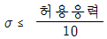
(정답률: 59%)
27. 여러 대의 엘리베이터가 운행될 경우 부등률을 고려하게 되는데, 비상용 엘리베이터의 부등률은 몇 %로 하는가?
- 50
- 70
- 100
- 150
(정답률: 68%)
28. 피치원 직경 D=450mm, 잇수 Z=90인 기어의 모듈은 얼마인가?
- m=2
- m=3
- m=4
- m=5
(정답률: 85%)
29. 지진에 대한 기본적인 고려사항으로 틀린 것은?
- 지진 시에 필요한 관제 운전 장치를 설치하는 것이 바람직하다.
- 전원계통의 사고 등 외부요인에 의한 사항은 지진에 대한 고려사항이 아니다.
- 구조부분에는 필요한 강도가 확보되어 위험한 변형이 생기지 않도록 하여야 한다.
- 지진 시에 로프나 전원케이블 등이 진동 혹은 흔들림에 의하여 승강로 내의 돌출물에 걸리는 것을 방지하여야 한다.
(정답률: 84%)
30. 다음과 같은 [조건]에서 균형추의 무게는 몇 kg으로 하여야 하는가?
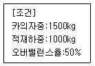
- 1000
- 1500
- 2000
- 2500
(정답률: 87%)
31. 길이가 10m인 단순 지지보의 4m 지점에 600kg의 집중하중이 작용할 때 반력 중 큰 것은 몇 kg 인가?
- 480
- 360
- 240
- 120
(정답률: 59%)
32. 건물에 승강기 설치를 할 경우 절차로 옳은 것은?
- 층별 교통 수요산출 → 교통량 계산 → 수송능력 목표치 설정 → 배치 계획의 결정
- 수송능력 목표치 설정 → 층별 교통 수요산출 → 교통량 계산 → 배치 계획의 결정
- 배치 계획의 결정 → 수송능력 목표치 설정 → 층별 교통 수요산출 → 교통량 계산
- 층별 교통 수요산출 → 수송능력 목표치 설정 → 교통량 계산 → 배치 계획의 결정
(정답률: 69%)
33. 에스컬레이터의 디딤판이 들려지는 상태에서의 운행이탈을 감지하는 스텝 주행 안전스위치의 설치장소로 가장 적절한 것은?
- 상부의 우측에만 설치
- 하부의 좌측에만 설치
- 상하부의 좌측에만 설치
- 상하부의 좌우측 모두 설치
(정답률: 86%)
34. 다음은 승강기의 안전장치들을 설명한 것이다. 승객용 승강기에 꼭 핗요한 안전장치들을 모두 선택한 것은?
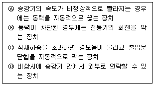
- Ⓐ, Ⓓ
- Ⓐ, Ⓑ, Ⓒ
- Ⓑ, Ⓒ, Ⓓ
- Ⓐ, Ⓑ, Ⓒ, Ⓓ
(정답률: 86%)
35. 에스컬레이터의 배열방식에 대한 특징으로 옳은 것은?
- 단열 겹침형 : 설치면적이 크다.
- 교차 승계형 : 승강구에서의 혼잡이 크다.
- 복열 승계형 : 오르내림 교통의 분할이 어렵다.
- 단열 승계형 : 바닥에서 바닥에의 교통이 연속적이다.
(정답률: 68%)
36. 원형코일 스프링의 설계에 이용되는 식 중 비틀림응력을 구하는 식은
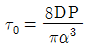
이다. 이때 P에 해당되는 것은? (단, d는 재료의 지름, D는 코일의 평균지름이다.)- 스프링 지수
- 스프링에 걸리는 하중
- 스프링에 저축된 에너지
- 스프링의 운동부분의 중량
(정답률: 73%)
37. ( )의 내용으로 옳은 것은?
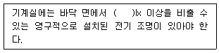
- 50
- 75
- 100
- 200
(정답률: 83%)
38. 기계부품에 외력이 작용했을 때 부품의 내부에 발생하는 저항력을 무엇이라 하는가?
- 응력
- 하중
- 변형률
- 탄성계수
(정답률: 81%)
39. 카, 균형추 또는 평형추를 운반하기 위해 로프에 연결된 철 구조물을 의미하는 용어로 옳은 것은?
- 슬링
- 에이프런
- 균형체인
- 이동케이블
(정답률: 72%)
40. 엘리베이터용 전동기가 일반 범용전동기에 비해 갖추어야 할 조건으로 틀린 것은?
- 기동토크가 클 것
- 기동전류가 작을 것
- 회전부분의 관성모멘트가 클 것
- 온도상승에 대해 열적으로 견딜 것
(정답률: 73%)
3과목: 일반기계공학
41. 금형가공법 중 재료를 펀칭하고 남은 것이 제품이 되는 가공은?
- 전단
- 셰이빙
- 트리밍
- 블랭킹
(정답률: 56%)
42. 40℃에서 연강봉 양쪽 끝을 고정한 후, 연강봉의 온도가 0℃가 되었을 때 연강봉에 발생하는 열응력은 약 몇 N/cm2인가? (단, 연강봉의 선팽창계수는 a=11.3×10-6/℃, 탄성계수는 E=2.1×106N/cm2이다.)
- 215
- 252
- 804
- 949
(정답률: 56%)
43. 외팔보의 자유단에 집중하중 W가 작용할 때, 작용하는 하중의 전단력선도는?
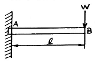
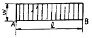
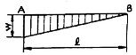
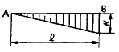
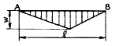
(정답률: 59%)
44. 2500rpm으로 회전하면서 25kW를 전달하는 전동축의 비틀림 모멘트는 약 몇 N·m인가?
- 7.5
- 9.6
- 70.2
- 95.5
(정답률: 41%)
45. 재료의 성질을 나타내는 세로탄성계수(E)의 단위는?
- N
- N/m2
- N·m
- N/m
(정답률: 77%)
46. 50kN의 물체를 4개의 아이볼트로 들어 올릴 때 볼트의 최소 골지름은 약 몇 mm인가? (단, 볼트 재료의 허용인장응력은 62MPa이다.)
- 10.02
- 12.02
- 14.02
- 16.02
(정답률: 31%)
47. 선반에서 베드(bed)의 구비조건이 아닌 것은?
- 마모성이 클 것
- 직진도가 높을 것
- 가공정밀도가 높을 것
- 강성 및 반진성이 있을 것
(정답률: 76%)
48. 표준 스퍼 기어에서 이의 크기를 결정하는 기준 항목이 아닌 것은?
- 모듈
- 지름 피치
- 원주 피치
- 피치원 지름
(정답률: 54%)
49. 펌프의 송출압력이 90N/cm2, 송출량이 60L/min인 유압펌프의 펌프동력은 약 몇 W인가?
- 700
- 800
- 900
- 1000
(정답률: 52%)
50. 측정기 내의 기포를 이용하여 측정면의 미소한 경사를 측정하는 것은?
- 수준기
- 사인바
- 컴비네이션 세트
- 오토 콜리메이터
(정답률: 69%)
51. 일반적으로 나사면에 중기, 기름 등의 이물질이 들어가는 것을 방지하는 너트는?
- 캡 너트
- 육각 너트
- 와셔붙이 너트
- 스프링판 너트
(정답률: 87%)
52. 패킹 재료의 구비조건이 아닌 것은?
- 내열성이 높아야 한다.
- 부식성이 높아야 한다.
- 내구성이 높아야 한다.
- 유연성이 높아야 한다.
(정답률: 80%)
53. 배관 및 밸브에서 급격한 서지압력을 방지하기 위해 설치하는 것은?
- 디퓨저
- 엑셀레이터
- 액추에이터
- 어큐물레이터
(정답률: 67%)
54. Ni-Cu계 합금 중 내식성 및 내열성이 우수하므로 화학기계, 광산기계, 증기 터빈의 날개 등에 주로 이용되는 합금은?
- 켈밋
- 포금
- 모넬 메탈
- 델타 메탈
(정답률: 60%)
55. 강을 담금질 과정에서 급냉시켰을 때 나타나는 침상조직으로 담금질 조직 중 가장 경도가 큰 조직은?
- 펄라이트
- 소르바이트
- 트루스타이트
- 마텐자이트
(정답률: 71%)
56. 다이캐스팅을 이용한 제품 생산의 설명으로 틀린 것은?
- 단면이 얇은 주물의 주조가 가능하다.
- 균일한 제품의 연속 주조가 불가능하다.
- 마그네슘, 알루미늄 합금의 대량 생산용으로 적합하다.
- 정밀도가 좋아서 제품의 표면이 양호하고 후가공이 적다.
(정답률: 65%)
57. 축 이음에서 두 축 중심이 약간 어긋나 있거나 축 중심선을 맞추기 곤란할 때 이를 보완하기 위하여 사용하는 축이음은?
- 머프 커플링
- 셀러 커플링
- 플렉시블 커플링
- 마찰 원통 커플링
(정답률: 73%)
58. 스폿(spot)용접에 대한 설명으로 옳은 것은?
- 가압력이 필요 없다.
- 가스용접의 일종이다.
- 알루미늄 용접이 불가능하다.
- 로봇을 이용한 자동화가 용이하다.
(정답률: 71%)
59. 브레이크 드럼에 500N·m의 토크가 작용하고 있을 때, 축을 정지시키는데 필요한 접선방향 제동력은 몇 N인가? (단, 브레이크 드럼의 지름은 500mm이다.)
- 3000
- 2500
- 2000
- 1500
(정답률: 39%)
60. 유압펌프의 용적효율이 70%, 압력효율이 80%, 기계효율이 90% 일 때 전체 효율은 약 몇 %인가?
- 50
- 60
- 70
- 80
(정답률: 53%)
4과목: 전기제어공학
61. 그림(a)의 병렬로 연결된 저항회로에서 전류 I와 I1의 관계를 그림(b)의 블록선도로 나타낼 때 A에 들어갈 전달함수는?
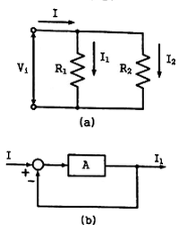
- R1/R2
- R2/R1
- 1/R1R2
- 1/R1+R2
(정답률: 63%)
62.
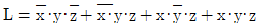
을 간단히 한 식으로 옳은 것은?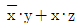
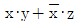
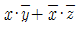
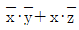
(정답률: 62%)
63. 유도전동기의 속도제어에 사용할 수 없는 전력 변환기는?
- 인버터
- 정류기
- 위상제어기
- 사이클로 컨버터
(정답률: 67%)
64. 전력(electric power)에 관한 설명으로 옳은 것은?
- 전력은 전류의 제곱에 저항을 곱한 값이다.
- 전력은 전압의 제곱에 저항을 곱한 값이다.
- 전력은 전압의 제곱에 비례하고 전류에 반비례한다.
- 전력은 전류의 제곱에 비례하고 전압의 제곱에 반비례한다.
(정답률: 65%)
65. 제어요소의 출력인 동시에 제어대상의 입력으로 제어요소가 제어대상에게 인가하는 제어신호는?
- 외란
- 제어량
- 조작량
- 궨환신호
(정답률: 35%)
66. 그림과 같은 블록선도가 의미하는 요소는?
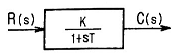
- 비례 요소
- 미분 요소
- 1차 지연 요소
- 2차 지연 요소
(정답률: 74%)
67. 자동제어계의 구성 중 기분입력과 궤환신호와의 차를 계산해서 제어 시스템에 필요한 신호를 만들어 내는 부분은?
- 조절부
- 조작부
- 검출부
- 목표설정부
(정답률: 42%)
68. 다음과 같이 저항이 연결된 회로의 전압 V1과 V2의 전압이 일치할 때, 회로의 합성저항은 약 Ω 인가?
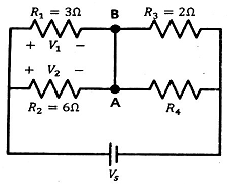
- 0.3
- 2
- 3.33
- 4
(정답률: 60%)
69. 전달함수
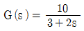
을 갖는 계에 ω=2 rad/sec인 정현파를 줄 때 이득은 약 몇 dB인rk?- 2
- 3
- 4
- 6
(정답률: 32%)
70. 조절부와 조작부로 구성되어 있는 피드백 제어의 구성요소를 무엇이라 하는가?
- 입력부
- 제어장치
- 제어요소
- 제어대상
(정답률: 72%)
71. 출력의 일부를 입력으로 되돌림으로써 출력과 기준 입력과의 오차를 줄여나가도록 제어하는 제어방법은?
- 피드백제어
- 시퀀스제어
- 리세트제어
- 프로그램제어
(정답률: 83%)
72. 다음 중 압력을 감지하는데 가장 널리 사용되는 것은?
- 전위차계
- 마이크로폰
- 스트레인 게이지
- 회전자기 부호기
(정답률: 56%)
73. 3상 유도전동기의 회전방향을 바꾸려고 할 때 옳은 방법은?
- 기동보상기를 사용한다.
- 전원 주파수를 변환한다.
- 전동기의 극수를 변환한다.
- 전원 3선 중 2선의 접속을 바꾼다.
(정답률: 84%)
74. 다음은 자기에 관한 법칙들을 나열하였다. 다른 3개와 공통점이 없는 것은?
- 렌츠의 법칙
- 패러데이의 법칙
- 자기의 쿨롱법칙
- 플레밍의 오른손법칙
(정답률: 61%)
75. 그림은 전동기 속도제어의 한 방법이다. 전동기가 최대 출력을 낼 때 사이리스터의 점호각은 몇 rad이 되는가?
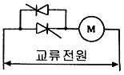
- 0
- π/6
- π/2
- π
(정답률: 52%)
76. 그림과 같이 접지저항을 측정하였을 때 R1의 접지저항(Ω)을 계산하는 식은? (단, R12=R1+R2, R23=R2+R3, R31=R3+R1이다.)
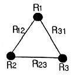
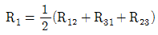
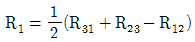
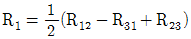
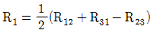
(정답률: 64%)
77.
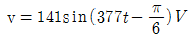
인 전압의 주파수는 약 몇 Hz인가?- 50
- 60
- 100
- 377
(정답률: 55%)
78. 서보기구용 검출기가 아닌 것은?
- 유량계
- 싱크로
- 전위차계
- 차동변압기
(정답률: 52%)
79. 다음의 정류회로 중 리플전압이 가장 작은 회로는? (단, 저항부하를 사용하였을 경우이다.)
- 3상 반파 정류회로
- 3상 전파 정류회로
- 단상 반파 정류회로
- 단상 전파 정류회로
(정답률: 69%)
80. 위치, 각도 등의 기계적 변위를 제어량으로 해서 목표값의 임의의 변화에 추종하도록 구성된 제어계는?
- 자동조정
- 서보기구
- 정치제어
- 프로그램제어
(정답률: 71%)